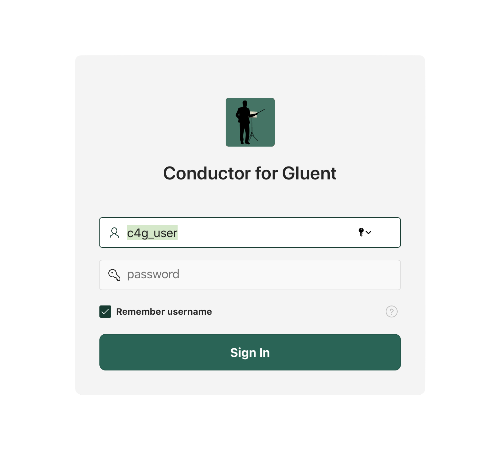
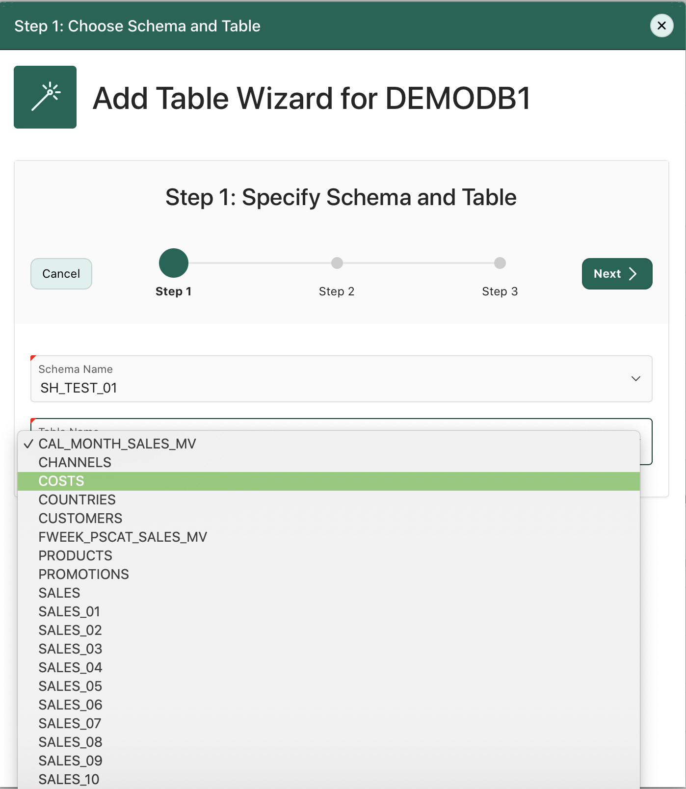
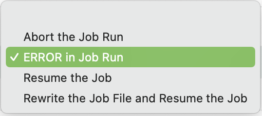
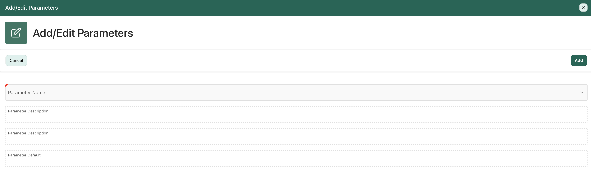

Introduction
Conductor for Gluent is an application to help manage Gluent offloads. The Gluent software works on a per database basis. Conductor has an additional unit above a database called a site. A particular installation of Conductor will have one site with one or more databases to manage.
The guided flow in Conductor is:
- Obtain a Gluent Advisor CSV for Conductor file from Gluent
- Add Database, after adding a database you will be taken to the Candidate Selection Wizard.
- Upload a Gluent Advisor CSV and select one or more tables. On finishing, you will be taken to the Job Wizard.
- Name your job, select one or more tables to offload for the job, and schedule the job.
- At this point, the job will automatically launch based on the schedule.
Note: Once some tables have been added either through the candidate selection page or using the add table wizard, the guided flow will not automatically start when closing the add/edit database page.
It is not mandatory to follow the guided flow. For example, if you do not have a Gluent Advisor CSV for Conductor file, you can add tables through the add table wizard on the Candidate Review page.
Login
Enter the Conductor for Gluent Apex URL into your browser. The URL will be something of the form:
http://{hostname}:{port}/apex/f?p=100

Once the Conductor for Gluent login form is available, then enter your username and password.
Site
A site is made up of one or more database, for which jobs can be scheduled for offloading data. At the site level, databases can be added to Conductor, defaults can be set for parameters, notifications and the application, and there is a site level overview of some metrics.
Site Home Page
From the site level menu, located on the upper left side of the screen, there are the following choices:
- Site Home - the site home page
- Application Defaults - where you can change settings that affect the way the application operates
From the site home:
- You can manage site level options:
- Default Offload Parameters
- Default Present Parameters
- Site Level Notification Options
- Review metrics at the site level:
- Count of Jobs by week (Last 28 days) for all databases
- Offload Percentage - percentage of data: offloaded, dropped, or not offloaded from all databases
- Offloadable Gigabytes of Unselected Advisor Candidates - if an advisor report was uploaded, this is a summary of space from tables which have not been selected
- Add a New Database - Click on the Add New card from the list.
- Select a Database to Manage - Click on one of the database cards, to manage its jobs and tables.
- Edit the details of a database - Click on the Edit Link of a database to go to the maintain database details page, where you change its description, icon color, database link information, etc.
Buttons:
- Default Offload Parameters - Click on the button to go to the Manage Default Offload Parameters for Site page.
- Default Present Parameters - Depress the button to go to the Manage Default Present Parameters for Site page.
- Site Level Notification Options - Click on the button to take you to the Manage Notifications for Site page.
Links:
- Database Name - click on the database name to bring up the database home page where you can manage tables and jobs for the database.
- Edit - click on this link to bring up the maintain database details page and edit details about the database.
Databases
Database Home Page
After clicking on a database on the site home page, you will go to the database home page for that particular database.
From the database level menu, located on the upper left side of the screen, there are the following choices:
- Site Home - the site home page
- Database Home - the database home page
- Dashboard - Monitor the status of jobs for the database.
- Job Maintenance - Add or edit jobs.
- Table Review - Add or edit details about tables to be offloaded.
- Candidate Selection - Wizard for selecting candidates from a Gluent Advisor CSV for Conductor.
At the top of the page are buttons/links to set offload, present and notification parameters at the database level
Followed by some summary information about the database:
- Advisor Candidates
- # of tables in the advisor report that have not been selected for offload.
- Clicking here will take you to the candidate selection wizard.
- Select Tables
- # of tables that have been selected as candidates for offload.
- Clicking here will take you to the table review page.
- Total Jobs
- # of jobs that have been created.
- Clicking here will take you to the job maintenance page.
- Running Jobs
- # of jobs currently running.
- Clicking here will take you to the dashboard.
- Successful Jobs
- # of jobs that completed successfully.
- Clicking here will take you to the dashboard.
- Jobs in Error State
- # of jobs where an error has occurred.
- Clicking here will take you to the dashboard.
Review metrics at the database level:
- Count of Jobs by week (Last 28 days) for this database
- Offload Percentage - percentage of data: offloaded, dropped, or not offloaded from this database
- Offloadable Gigabytes of Unselected Advisor Candidates - if an advisor report was uploaded, this is a summary of space from tables which have not been selected
Buttons:
- Default Offload Parameters - Click on the button to go to the Manage Default Offload Parameters for Database page.
- Default Present Parameters - Depress the button to go to the Manage Default Present Parameters for Database page.
- Notification - Click on the button to take you to the Manage Notifications for Database page.
- Calendar (icon) - Located in the Count of Jobs metric (right-hand side above bars), clicking the button will show a calendar for jobs that have run.
Maintain Database Details
Add Database
When adding a new database, enter database name, description, and connection method on this page. Then press Add button.
Fields:
- Name : Any alpha-numeric identifier used to identify the database. [Required field]
- Description : Any alpha-numeric characters to describe the database. [Required field]
- Connection Method : No Connection Allowed -or- DB Link. If DB Link is not specified all details about the tables to be offloaded will need to be manually entered. [Required field]
Buttons:
- Add : Add the database details to the Conductor for Gluent repository.
- Close : Close the page and go back to the site home.
Edit Database
Any of the fields can be modified. You can switch the color of the database by clicking on the "Database Icon Color" link. Once a color is selected from the pick color screen, be sure to press the "Save" button.
To update the database link information (if that is being used), press on the DB Link Wizard button.
Fields:
- Name : Any alpha-numeric identifier used to identify the database. [Required field]
- Description : Any alpha-numeric characters to describe the database. [Required field]
- Connection Method : No Connection Allowed -or- DB Link. If DB Link is not specified all details about the tables to be offloaded will need to be manually entered. [Required field]
Buttons:
- Save : Save the database details to the Conductor for Gluent repository.
- Delete : Delete the database details to the Conductor for Gluent repository.
- Close : Close the page. If the database has tables, then you will be directed to the Site home. If the database does not have tables, then you will be directed to the candidate selection wizard.
- DB Link Wizard : Open the DB Link Wizard to add/edit the database link.
Links:
-
Database Icon Color : Bring up the page to pick a color for the database icon. Once a color is selected from the pick color screen, be sure to press the "Save" button.
DB Link Wizard
DB Link Wizard – Step 1
Enter the host name, port, service name, and password. Press Next to create the database link.
Fields:
- Host Name : Fully qualified host name (FQDN) or IP address. [Required field]
- TNS Port : Port for the listener on the host that provides access to the database. [Required field]
- Service Name : The TNS service name for the database. [Required field]
- Password : The password of the CONDUCTOR_FOR_GLUENT user for this database. [Required field]
Buttons:
- Cancel : Cancel the wizard.
- Next : When the next button is depressed, a database link will be (re-)created from the details provided, then you move to the 2nd step of the DB Link Wizard.
DB Link Wizard – Step 2
Press Test DB Link to verify that the database link is correct. Press Finish if the test is successful. Press the left arrow to go back and correct any of the database link information.
Buttons:
- Test DB Link : A query will be run with the database link to verify that it completes successfully.
- Left Arrow : Return to Step 1 of the wizard.
- Cancel : Cancel the wizard.
- Finish : When the finish button is hit, the wizard will close.
Test DB Link
When testing the database link, a message will appear in the DB Link Test Results section for success or failure.
Tables
There are two ways to add tables to the Conductor for Gluent repository:
- Candidate Selection Wizard - Tables are selected from a Gluent Advisor report. The candidate selection menu option will bring up the candidate selection wizard.
- Add Table Wizard - tables are selected from a list of schemas and their tables across a database link based on the privileges provided to the Conductor for Gluent user. The add table wizard button can be found on the table review page.
Candidate Selection Wizard
Candidate Selection Wizard - Step 1
Step 1 – Select an Advisor Output File: Select a file or if this is your second time through, you can use the existing file. Multiple files can be uploaded if a new advisor report CSV is obtained. Press Next to continue.
Fields:
- When Upload Advisor Output File (CSV) radio option is selected:
- Advisor Output File - Click into the field to bring up the file browser and select a file.
- Date the Advisor was run - It is important to select the correct date, as calculations for the default offload retention is calculated based on this date and information contained in the Gluent Advisor file.
- Description - Any alphanumeric description for the file.
- When Use Current Advisor Output radio option is selected:
- Current file name - The name of the current file (read only).
Buttons:
- Cancel : Cancel the current wizard run.
- Next : Upload the advisor file into the Conductor for Gluent repository.
Candidate Selection Wizard - Step 2
Step 2 – Select Tables: Select one or more tables that you want to offload by clicking on the table's checkbox. Press Next to continue.
Fields:
- Search : Enter any search string and press enter or hit Go. Once you have searched, you can clear the criteria by hitting the x next to the search term.
Buttons:
- Left Arrow : Return to Step 1 of the wizard.
- Cancel : Cancel the wizard.
- Next : Add the selected tables to the Conductor for Gluent repository.
- Magnifying Glass (icon) : Allows the narrowing of the search to specific field.
- Go : Search for term entered in the search field.
Candidate Selection Wizard - Step 3
Step 3 – Table Thresholds: The default offload threshold will be determined from the Advisor report. The drop threshold default will be calculated using the application parameter OFFLOAD_DROP_RATIO * offload threshold. Either threshold may be updated if desired. Press Next to continue.
Fields:
- Offload Threshold : For each date range partitioned table, you can enter a threshold for offloading anything older than the number of days specified. It is defaulted based on the Gluent Advisor Report.
- Drop Threshold : For each date range partitioned table, you can enter a threshold for truncating and dropping anything older than the number of days specified.
Buttons:
- Left Arrow : Return to Step 2 of the wizard.
- Cancel : Cancel the wizard.
- Next : Save the values for the table offload and drop thresholds.
Candidate Selection Wizard - Step 4
Step 4 – Partition Details: If a database link is in use, then the partition details will be automatically loaded from the database into the repository. If no connection is available, the partition details will need to be entered manually. Additionally, a column mask can be selected for numbers that represent dates. Press Finish to complete the wizard.
Fields:
- Partition Granularity : The partition granularity corresponds to the Gluent Data Platform parameter --partition-granularity. See Gluent Data Platform documentation for details.
- Column Mask : The column mask field is a dropdown box that allows selection of a mask on top of number fields when they can be interpreted as a date.
Buttons:
- Left Arrow : Return to Step 3 of the wizard.
- Cancel : Cancel the wizard.
- Finish : Complete the wizard. Be sure to hit the save button if you have modified partition details.
- Row Actions (icon) : Located in the Partition Details section, it allows rows to be added, deleted, duplicated, etc.
- Save : Save any updates to the partition details. The button is in the Partition Details section.
Table Review Page
The table review page allows you to add a new table and view information about the tables that have been selected to offload. The following details about tables are available:
For all tables, you can:
- View chart of Frontend-Backend Space
- View chart of Frontend-Backend Rows
- View table level offload parameters
Additionally, for partitioned tables, you can:
- View and update the offload and drop threshold, as well as, the offload drop action.
- View the partition details
Fields:
- Candidate Table : Select a table from the list by clicking on it.
Buttons:
- Close : Close the page and return to the database home page.
- Add Table Wizard : Complete the wizard. Be sure to hit the save button if you have modified partition details.
Table Level Offload Parameters Section

Fields:
- Parameters : A report of all parameters that have been specified for the table.
Buttons:
- Maintain Parameters : Pressing the button will bring up the command parameters page allowing parameters to be added at the table level. See the Command Parameters section for details on adding parameters.
Offload and Drop Thresholds Section

Fields:
- Table Partition Type : The frontend partitioning type. (read only)
- Offload Threshold : Number of days for which a date range (or date masked) should be offloaded. The current date minus the number of days here, will be compared with the partition boundaries.
- Drop Threshold : Number of days for which a date range (or date masked) should be truncated and dropped. The current date minus the number of days here, will be compared with the partition boundaries.
- Drop Action after Offload :
- Use Site Default : Use the value specified at the site level in the Application Parameters page.
- GENERATE : Generate a script to drop the offloaded partitions after an offload is completed based on Drop Threshold.
- AUTO : Drop the offloaded partitions after a table is offload based on Drop Threshold.
- MANUAL : Do Nothing after offload is completed.
- Drop Verify Level :
- Use Site Default : Use the value specified at the site level in the Application Parameters page.
- COUNT : Before dropping a partition perform a count verification of the frontend partition boundaries against both the backend and frontend. The counts must match before proceeding with a partition drop.
- TRUST : Trust that no modifications (DML) have been performed on the frontend or backend tables before proceeding with a partition drop. No count will be done.
Buttons:
- Save : Save any updates to the thresholds, drop action after upload, or drop verify level fields. The button is in the Offload and Drop Thresholds section.
Partition Key Column Details Section
Fields:
- Order : The column order for the partition key columns. (read only)
- Name : The column name for the partition key columns. (read only)
- Granularity : The partition granularity corresponds to the Gluent Data Platform parameter --partition-granularity. See Gluent Data Platform documentation for details. (read only)
- Mask : The column mask field is a date format on top of number fields when they can be interpreted as a date. (read only)
Edit Partition Details Dialog
Fields:
- Order : The column order for the partition key columns.
- Name : The column name for the partition key columns.
- Granularity : The partition granularity corresponds to the Gluent Data Platform parameter --partition-granularity. See Gluent Data Platform documentation for details.
- Column Mask : The column mask field is a dropdown box that allows selection of a mask on top of number fields when they can be interpreted as a date.
Buttons:
- Close : Close the page and go back to the table review page.
- Add Row : Add row to the partition key columns.
- Save : Save the changes made to the partition details.
- Row Actions (icon) : It allows rows to be added, deleted, duplicated, etc.
Add Table Wizard
To add a new table, click the Add Table Wizard button located on the table review page.

When a database link is allowed, the first page of the Add Table Wizard will have select lists for the schemas and table names. When next is hit, the partitioning information will be automatically gathered.
When no connection is allowed, you will need to manually enter the correct schema, table_name and partitioning type.
The second page of the Add Table Wizard will be used to specify the Offload and Drop Thresholds for partition tables.
No information is entered for non-partitioned tables.
The third page of the Add Table Wizard is used to specify the partition keys when no connection is allowed. Plus, date masking can be specified for cases where a string or number is used to represent a date.
No information is entered for non-partitioned tables.
Jobs
The main page for job maintenance contains cards, each with a job on it. Jobs can be selected by clicking on the card. Clicking on the current card allows the editing of details about the job. The job steps are editable in this page. The Job Add Wizard and calendar view are available by pressing the corresponding buttons.
Job Page with No Jobs
Before adding any jobs, the screen will show No records found.

To start adding jobs, hit the Add Job Wizard button
Add Job Wizard - Step 1
Step 1: Job Name and Type
The job name can be any alpha-numeric characters. The job description is a free form field. The job type is going to be Normal most of the time. Press Next to continue.
Fields:
- Job Name : An alpha-numeric name for the job with no spaces or special characters. It must be unique across all databases.
- Job Description : An alpha-numeric description of the job.
- Job Type : Normal is going to be the job type for 99% of the jobs. A rare case calls for a Duplicate Table job type, when there are duplicate copies of tables that need to be offloaded in multiple schemas. The duplicate job type will be covered in a separate section in Appendix A.
Buttons:
- Cancel : Cancel the wizard.
- Next : The Job will be saved when the next button is depressed, and you will go to Step 2.
Add Job Wizard - Step 2
Step 2: Job Steps
Select the step type. Then select the table for the step. Select if the step is enabled or disabled. All steps also have a step comment. Other fields will depend on the step type. Press Next to continue.
Radio Selector:
- Next Action:
- Save below job step and proceed to scheduling - Save the job step and move to Step 3 of the wizard.
- Save below job step and add another job step - Save the job step and stay on Step 2 of the wizard.
- Save below job step and add parameters for it - Save the job step and go to the command parameters page to add parameters to the job step. After the command parameters page, you will be returned to Step 2 of the wizard.
- Do not save below job step and proceed to scheduling - Do not add the job step and move to Step 3 of the wizard.
Fields:
- Step Type :
- offload - offload oracle tables to backend.
- present - present backend table to oracle
- sched_drop_fe_ds - drop offloaded partitions based on specified threshold
- sched_gen_drop_fe_ds - generate the statements to drop offloaded partitions based on specified threshold
- Job Step Class :
- ongoing - An offload which would run periodically to offload additional datasets. This job step class should be used for partition tables.
- reset - An offload which would reset the table in the backend and re-offload the current values in the frontend. This job step class should be used for non-partitioned tables where a full refresh is done to the backend.
*** Caution: All backend data will be dropped. DATA LOSS WILL OCCUR if all data is not available in frontend table.
- Table : Table for this job step.
- Enabled : Yes or No.
- Job Step Comment : Any alphanumeric comment about this particular job step.
Buttons:
- Left Arrow : Return to Step 1 of the wizard.
- Cancel : Cancel the wizard.
- Next : The actions taken when the next button is hit will depend on the Next Action radio selector.
Add Job Wizard - Step 3
Step 3: Job Schedule
Jobs can be scheduled on a Monthly, Weekly, Daily, or Hourly basis. Only jobs with complete information can be enabled.
Fields:
- Frequency :
- Monthly - Choose the day of the month (1-28), the hour, and the minute the job should run every month.
- Weekly - Choose the day of the week, the hour, and the minute the job should run every week.
- Daily - Choose the hour and minute the job should run every day.
- Hourly - Choose the minute that the job should run every hour.
- Enabled : Yes or No.
Buttons:
- Left Arrow : Return to Step 2 of the wizard.
- Cancel : Cancel the wizard.
- Next : The actions taken when the next button is hit will depend on the Next Action radio selector.
Job Page after Adding a Job
Once a job is added, a card can be seen on the page.
On each card, the following details are shown:
- Job Name is the title of the card.
- Job Mode is the subtitle of the card (execute or verify).
- Schedule is the text of the card.
- Job Comment is the sub-text of the card.
- Enabled/Disabled
- Enabled jobs will have a Blue circular play icon.
- Disabled jobs will have a gray circular pause icon.
Job Page with a Job Selected
Clicking on the card, will show the details of the job.
The currently selected card will have a green border around it. The jobs steps will appear below the job cards section, along with parameters for the currently selected job step. Additionally, the notifications for the job will be shown last in a collapsible section (click the arrow to collapse or expand the section).
Edit Job Details
Clicking on the currently selected card, will bring up the dialog to edit the job details.
Fields:
- Job Name : Name of the job can be any alpha numeric characters. No spaces or special characters.
- Job Description : Any alpha numeric characters describing the job.
- Frequency :
- Monthly - Choose the day of the month (1-28), the hour, and the minute the job should run every month.
- Weekly - Choose the day of the week, the hour, and the minute the job should run every week.
- Daily - Choose the hour and minute the job should run every day.
- Hourly - Choose the minute that the job should run every hour.
- Enabled : Yes or No.
- Job Mode :
- Execute - to execute the job fully.
- Verify - to run the job to verify the parameters but not actually offload any data.
- Job Type : Normal is going to be the job type for 99% of the jobs. A rare case calls for a Duplicate Table job type, when there are duplicate copies of tables that need to be offloaded in multiple schemas. The duplicate job type will be covered in a separate section in Appendix A.
Buttons:
- Cancel : Cancel the dialog.
- Delete : Delete the job if there are no job steps.
- Save : Save the changes to the job.
Job Steps Section
In the Job Steps section, you can directly edit the job step fields. The parameters for the job step can be added, updated, or deleted by clicking on the step's maintain link.
Fields:
- Step# : A numeric value to order the steps for execution.
- Table Id : The table for this step.
- Job Step Class :
- ongoing - An offload which would run periodically to offload additional datasets. This job step class should be used for partition tables.
- reset - An offload which would reset the table in the backend and re-offload the current values in the frontend. This job step class should be used for non-partitioned tables where a full refresh is done to the backend.
*** Caution: All backend data will be dropped. DATA LOSS WILL OCCUR if all data is not available in frontend table.
- Step Type :
- offload - offload oracle tables to backend.
- present - present backend table to oracle
- sched_drop_fe_ds - drop offloaded partitions based on specified threshold
- sched_gen_drop_fe_ds - generate the statements to drop offloaded partitions based on specified threshold
- Enabled : Yes or No.
- Job Step Comment : Any alphanumeric comment about this particular job step.
- Backend Table : Only used for present commands.
- Offload Specification : The value can be used for some specialized offload methods:
- Retention based on # partitions: Specify a "P" with a number, and Conductor will offload partitions beyond the number specified. e.g., if 6 is specified and there are 12 partitions, Conductor will specify a "--less-than-value" parameter that results in partitions 7-12 being offloaded (if they have not been offloaded already).
- Specific --less-than-value: Specify a "L" with a value, and Conductor will supply the value in the --less-than-value parameter when offloading.
- Parameters : Link to maintain parameters for the job step.
Links:
- Maintain : Pressing the button will bring up the command parameters page allowing parameters to be added at the job step level. See the Command Parameters section for details on adding parameters.
Buttons:
- Cancel : Cancel the dialog.
- Delete : Delete the job if there are no job steps.
- Save : Save the changes to the job.
Future Job Calendar
Displays jobs that will run based on their projected schedule in a calendar view.
Buttons:
- Close : Close the dialog.
- Left Arrow (icon) : Move backward by month.
- Right Arrow (icon) : Move forward by month.
- Today : Go to Today on the calendar.
- Month : Month view.
- Week : Week view.
- Day : Day view.
- List : View as a list.
Dashboard
The dashboard allows for monitoring of jobs.
Job States: The donut graph shows a summary by state of the jobs. The state pieces can be clicked on to drill down into the run job details.
Recent Jobs: The 10 most recent jobs. Drilldown to the run job details by clicking on the job id. Also, the job name can be selected to drill down to the job details.
Fields:
- Auto-Refresh Interval : Dropdown allowing a selection to set an auto-refresh interval.
Buttons:
- Close : Close the page. Takes you back to the Database Home.
- Refresh : Refresh the page manually.
- Calendar (icon) : Opens the job calendar dialog.
Links:
- Piece of Job State Donut : Pressing one of the state pieces will bring up the run job details page for all jobs with the state.
- Job Id : Pressing the link will bring up the run job details page for the job with that job id and with that job state.
- Job Name : Pressing the link will take you to the job maintenance page.
Job Calendar
Displays jobs that have run in a calendar view.
Hovering on a job will show the start and end time for the job. Clicking on the job will bring up the run job details page for the job id.
Buttons:
- Close : Close the dialog.
- Left Arrow (icon) : Move backward by month.
- Right Arrow (icon) : Move forward by month.
- Today : Go to Today on the calendar.
- Month : Month view.
- Week : Week view.
- Day : Day view.
- List : View as a list.
Run Job Details
The run job details page shows the details of a run job.
Sections
Sections:
- Run Jobs : Run job level details.
- Run Job Steps : Details on each run job step.
- Command Details : Commands are those job steps executing an actual Gluent Data Platform command.
Run Jobs Section
Fields:
- Id - internal job id (read only)
- Job Name (read only)
- Job Mode (read only)
- Run Job State - dropdown to allow a job in error state to be aborted, resumed, or restarted. [Only if run job in ERROR state]
- Start Timestamp (read only)
- Finish Timestamp (read only)
- Description (read only)
Buttons:
- Refresh (icon) : Refresh the section.
- Save : Save change to Run Job State field. [Only if run job in ERROR state]
Run Job Steps Section
Fields:
- # - internal step number (read only)
- State - internal run job state (read only)
- Step Type (read only)
- Step Table
- Job Step Offload Spec - internal offload specification details (read only)
Buttons:
- Refresh (icon) : Refresh the section.
Command Details Section
Fields:
- Id - internal command id (read only)
- Start Timestamp (read only)
- Finish Timestamp (read only)
- Status (read only)
- Status Details (read only)
- Log File Name - Gluent Data Platform log file name (read only)
Buttons:
- Refresh (icon) : Refresh the section.
Handling a Job in Error State
A job can be updated from error state on the run job details page. The run job details page can be accessed by:
- Clicking on the job_id link for a job in error state from the Recent Jobs list.
- Selecting one or more jobs in error state by selecting the Error donut piece.
Once the job is up in the run job details page, double-click on the Run Job State field.
This will allow access to the dropdown list to handle the job. The options shown will be:

Here is what each option will do:
- Abort the Job Run - Change the state of the job to aborted. The run job cannot be resumed or started once this is done. The job will run from the beginning on the next scheduled run.
- ERROR in Job Run - Leave the job in error state. A job in error state will not run on its next scheduled date/time.
- Resume the Job - Job will run at the start of the next minute. The job will resume where it left off with the same job settings as when the job started. This option would be used when job was affected by outside forces. For example, a network outage caused the job to fail because it could not connect to the backend.
- Rewrite the Job File and Resume the Job - Job will run at the start of the next minute. Before resuming where it left off, the job will rewrite the job file to pick up any changes to job parameters or other job step information that has been updated. This option would be used in cases where an additional parameter is needed or something else about the job was specified incorrectly.
Command Parameters
Command parameters are Gluent Data Platform parameters that can be specified to be used by offload or present commands executed by Conductor for Gluent. They can be specified at different levels of operation:
- Site Level - Parameters will be used for every offload or present command executed across all the databases.
- Database Level - Parameters will be used for every offload or present command executed for that specific database.
- Table Level - Parameters will be used for every offload or present command executed for that specific table.
- Job Step Level - Parameters will be used for every offload or present command executed for that specific job step.
In the above example screen, the command parameters are being maintained for offload commands at the site level.
Add Command Parameter
Here is the flow of adding a parameter.
Before adding a parameter to a job step
Hit the Add Parameter button.
Add Parameter: Initial Screen

Click on the dropdown
Add Parameter: Dropdown list
Select a parameter from the dropdown list.
Add Parameter: Specify value

If the parameter requires a value, that is entered and then hit Add button.
After adding a parameter to a job step
Once the parameter is added, it will show up in the report for that job step.
Job Notifications
The implementation of notifications is different than that of parameters. It is not an accumulation but an override system:
- Job Level - Job notifications override any notifications at the database or site level.
- Database Level - Database level notification will be used when there are no notifications set at the job level.
- Site Level - Values entered at the site level will be used when there are no notifications at the database level and at the job level.
Notifications are sent at the following points of a job:
- When Job Begins
- When Job Succeeds
- If Job has an Error
Notifications can be enabled and disabled.
Fields:
- Email Addresses for Notifications when Job Begins
- Enabled toggle for Notifications when Job Begins
- Email Addresses for Notifications when Job Succeeds
- Enabled toggle for Notifications when Job Succeeds
- Email Addresses for Notifications if Job has an Error
- Enabled toggle for Notifications if Job has an Error
Buttons:
- Close - Close the dialog.
- Delete - Delete the notifications.
- Save - Save any changes made to the notifications.
Application Defaults
The application defaults are parameters that affect the way the Conductor for Gluent functions. Here is a list of the parameters and how they work:
- CREATE_BACKEND_DB – Controls whether the parameter –create-backend-db will be included on offload commands. If the backend system allows the gluent user to create databases, then it should be set to YES. If the backend system does not allow the gluent user to create databases, then set to NO.
- DROP_VERIFY_EXPIRY – (for future use)
- DROP_VERIFY_LEVEL – Controls the default value for the DROP_VERIFY_LEVEL on tables.
- COUNT : Before dropping a partition perform a count verification of the frontend partition boundaries against both the backend and frontend. The counts must match before proceeding with a partition drop.
- TRUST : Trust that no modifications (DML) have been performed on the frontend or backend tables before proceeding with a partition drop. No count will be done.
The DROP_VERIFY_LEVEL can be over-ridden at the table level. - JOB_LAUNCH_INTERVAL – Controls the granularity of the drop down for minutes in the job scheduler. If set to 1, you can specify any minute of the hour (0-59). If you specify 15, you can specify 0, 15, 30, 45. - OFFLOAD_DROP_RATIO – Controls the default value for the DROP_THRESHOLD on tables. The value in this field will be multiplied with the OFFLOAD_THRESHOLD to determine the default for the DROP_THRESHOLD. - OFFLOAD_DROP_ACTION – This is the site-wide default for whether an offload job step should attempt to
- GENERATE : Generate a script to drop the offloaded partitions after an offload is completed based on Drop Threshold.
- AUTO : Drop the offloaded partitions after a table is offload based on Drop Threshold.
- MANUAL : Do Nothing after offload is completed.
The OFFLOAD_DROP_ACTION can be over-ridden at the table level.
Double-click in the Value field to edit the parameter value.
Appendix A
Duplicate Table Job
When there are duplicate copies of tables that need to be offloaded in multiple schemas. An example of this would be if a company had a schema per client with the same tables under each schema.
A Duplicate Table Job is added through the Add Job Wizard, however, only step 1 is entered. After completing step 1, you will be taken back to the main job maintenance page. Once you select the job, you can start adding elements to the configuration. The different types of elements in a configuration are:
- Duplicate
- Enter duplicate table details.
- Only a table name is specified (no schema/owner), as there are multiple duplicate tables across the database
- The duplicate element will look for the specified table name across all schemas in the database.
- Include
- Enter the details for a specific table that should be included in the job.
- Enter a full table name with owner/schema and table names specified.
- Exclude
- Enter the details for a specific table that should be excluded in the job.
- Enter a full table name with owner/schema and table names specified.
Example
A call center company has one schema for each client that they service through their call center. Under each of those client schemas, they have a CALL_DETAILS table which needs to be offload. In addition, they have a training schema, which has a CALL_DETAILS table that should not be offloaded. The configuration elements for this scenario are:
- Duplicate, CALL_DETAILS
- Exclude, TRAINING.CALL_DETAILS
This will result in a job being generated based on the frequency desired that will have all the CALL_DETAILS tables except the one from the TRAINING schema.